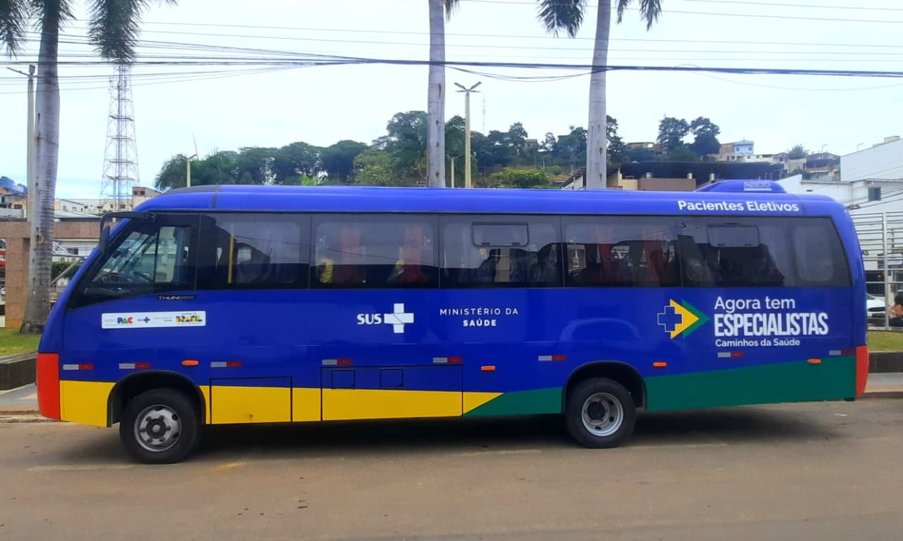

Segunda versão da varredura de Belém, sobre um critério novo: o valor do contrato não vem da distância que qualifica repasse federal — vem do volume de atendimentos agendados dentro do próprio município e da distância real entre a casa do paciente e a unidade que vai atendê-lo.
A primeira varredura mediu Belém pelo termômetro errado.
Ela perguntou se o município se qualificava para o cofinanciamento das portarias — trajeto acima de 50 km, origem e não destino — e concluiu que não. A conclusão continua verdadeira, e continua irrelevante. O repasse federal é uma fonte de custeio, não uma medida de importância.
Medir a oportunidade pelo gatilho de repasse leva a descartar exatamente os municípios onde há mais paciente para transportar: as capitais e os polos, onde o serviço existe, o volume é grande e o deslocamento é curto. Belém é o caso extremo desse erro.
| Critério | O que mede | O que produz |
|---|---|---|
| Distância que qualifica repasse | Se o trajeto passa de 50 km entre municípios | Descarta capital e polo · orienta para o interior disperso |
| Posição no fluxo | Se o município envia ou recebe paciente | Descarta quem recebe · ignora o paciente que mora ali |
| Raio até a unidade de destino | Distância real entre a casa e o atendimento agendado | Precifica qualquer geografia · escala por aditivo |
O paciente de Belém que precisa atravessar a cidade para uma consulta agendada tem o mesmo problema de quem cruza 80 km de estrada: ou ele chega, ou a vaga se perde. A diferença é que na cidade ele é mais barato de transportar e existe em quantidade muito maior.
O produto deixa de ser "transporte de paciente crônico para o polo regional" e passa a ser logística de comparecimento: cada atendimento agendado na rede municipal gera uma busca em casa, uma confirmação ativa e um registro. Vende-se por preço unitário por faixa de raio, não por valor global — o que torna a expansão de escopo um aditivo de volume, não uma nova licitação.
Sob o critério antigo, a demanda de Belém eram 131 mil deslocamentos. Sob o novo, o universo é vinte vezes maior.
Os parâmetros assistenciais do SUS, consolidados na Portaria GM/MS 1.631/2015, trabalham com 2 a 3 consultas médicas por habitante ao ano. Aplicados a Belém, isso é o tamanho do campo:
Ninguém transporta 4 milhões de pessoas por ano, e a proposta não deve sugerir isso. O que o universo estabelece é que o escopo é uma decisão de contrato, não um limite de demanda — e que há espaço para crescer por anos sem esgotar o campo.
A taxa de não comparecimento em consultas e exames agendados na rede pública gira em torno de 25%. Municípios monitorados registram 23,06% em Cuiabá e 26,85% em Campo Largo. Entre os motivos mais relatados em estudo de campo estão esquecimento da data e desconhecimento de que a consulta havia sido agendada.
Ou seja: uma parte grande da perda não é clínica nem social — é falha de comunicação e de deslocamento, que é exatamente o que uma central de regulação de transporte com confirmação ativa resolve. Não é efeito colateral do contrato. É o produto.
Em um escopo de 400 mil atendimentos transportados por ano, derrubar o absenteísmo desse público de 25% para 8% devolve 68 mil atendimentos por ano à rede — sem abrir uma vaga nova, sem contratar um médico, sem construir uma unidade.
No escopo pleno, são 153 mil. É esse número que vira notícia, e é ele que justifica o contrato para quem precisa defendê-lo publicamente.
O custo de um deslocamento não depende de qual município ele cruza. Depende de quantos ciclos o veículo cumpre no dia.
Um veículo que opera em raio curto, com trânsito urbano e destino comum, fecha dez ciclos por jornada. Um que sobe para Mosqueiro fecha dois. Entre esses dois extremos, o custo por paciente transportado varia quase nove vezes — e é isso, não a fronteira administrativa, que precisa estar no preço.
| Faixa de raio | Ciclos por dia | Veículo | Km por mês | Atendimentos por veículo/mês |
|---|---|---|---|---|
| A · até 5 km | 10 | Van | 4.840 | 1.408 |
| B · 5 a 15 km | 6 | Van | 5.676 | 845 |
| C · 15 a 35 km | 4 | Micro-ônibus | 7.040 | 563 |
| D · 35 a 70 km | 2 | Micro-ônibus | 7.040 | 282 |
| E · fluvial | — | Embarcação | — | A dimensionar em campo |
Capacidade calculada sobre jornada operacional de dez horas, oito pacientes consolidados por corrida e vinte e dois dias úteis ao mês. Os atendimentos por veículo já consideram ocupação de 80%, não capacidade teórica — dimensionar por lotação plena é o erro clássico de quem precifica transporte por viagem.
Preço unitário calculado sobre lotação plena joga o risco de ociosidade inteiro para a operadora: se a corrida sai com seis pacientes em vez de oito, a diferença sai do resultado. Os 80% são a folga que absorve falta, remanejamento e corrida de retorno com lotação parcial.
É premissa declarada e deve ser recalibrada no terceiro mês de operação, com ocupação medida viagem a viagem.
Custo variável da faixa, mais o rateio do bloco fixo, vezes 1,35.
| Faixa | Custo do veículo/mês | Custo variável por atendimento | Rateio do fixo | Preço unitário |
|---|---|---|---|---|
| A · até 5 km | R$ 18.075 | R$ 12,84 | R$ 8,90 | R$ 29,34 |
| B · 5 a 15 km | R$ 19.371 | R$ 22,93 | R$ 8,90 | R$ 42,96 |
| C · 15 a 35 km | R$ 26.151 | R$ 46,43 | R$ 8,90 | R$ 74,69 |
| D · 35 a 70 km | R$ 26.151 | R$ 92,87 | R$ 8,90 | R$ 137,38 |
O rateio do bloco fixo cai à medida que o volume cresce, porque a mesma central, a mesma supervisão e a mesma sede atendem mais atendimentos. É por isso que o preço unitário baixa quando o escopo aumenta — e é o argumento comercial mais forte que a Samais tem em Belém, porque alinha o interesse dos dois lados: quanto mais a prefeitura expande, mais barato fica cada atendimento.
Preço global mensal obriga a renegociar tudo a cada mudança de escopo. Preço unitário por faixa transforma expansão em aditivo de volume, com valor já conhecido e justificado desde a assinatura. É a diferença entre uma nova licitação e um ofício.
O modelo de raio foi construído por outro caminho que o modelo de frota. Chegar perto do mesmo número é o teste de que nenhum dos dois está errado.
| Método | Como chega ao valor | Fase 1 · mensal |
|---|---|---|
| Modelo de frota | Bloco fixo mais veículos dimensionados por ciclo, vezes 1,35 | R$ 464.407 |
| Modelo de raio | Volume por faixa vezes preço unitário da faixa | R$ 513.543 |
| Diferença | Quilometragem por faixa | 10,6% |
A diferença de 10,6% não é arredondamento — é erro de premissa, e estava no modelo de frota. Ele adotava 4.200 km por veículo ao mês para toda a malha continental, número arbitrado. O modelo de raio deriva a quilometragem do tempo: duração do ciclo vezes velocidade média urbana declarada.
A correção importa porque anda na direção perigosa. Tomar o raio da faixa como se fosse a distância percorrida ignora que uma corrida de raio curto coleta oito pacientes espalhados antes de entregar — o percurso real é múltiplo do raio. Subestimar isso rebaixa combustível e manutenção em cerca de 30%, e o número continua parecendo razoável, que é o que torna o erro difícil de ver.
O valor de referência da Fase 1 passa a ser o do modelo de raio. Os 13 veículos permanecem — a frota estava certa; o custo de rodá-la é que estava baixo.
Componente fixo — estrutura de central, supervisão, sede e frota mínima contratada, que garante disponibilidade independentemente do volume do mês.
Componente variável — preço unitário por faixa de raio para o volume acima da base contratada e para toda expansão futura de escopo.
Sem o componente fixo, um mês de demanda baixa não paga a estrutura. Sem o variável, cada ampliação vira renegociação.
Três degraus, com o preço unitário caindo em cada um.
| Fase | Escopo | Atendimentos/ano | Frota | Valor mensal | Por atendimento |
|---|---|---|---|---|---|
| Fase 1 | Linhas crônicas · diálise e radioterapia | 131.164 | 13+1 | R$ 513.543 | R$ 46,98 |
| Fase 2 | Mais consultas especializadas e exames agendados | 400.000 | 36+4 | R$ 1.226.027 | R$ 36,78 |
| Fase 3 | Calendário SUS integral · rede básica e distritos | 900.000 | 76+8 | R$ 2.487.615 | R$ 33,17 |
De R$ 46,98 para R$ 33,17 por atendimento — queda de 29% no preço unitário entre o primeiro e o terceiro degrau, com a mesma qualidade de serviço. A economia não vem de apertar custo: vem de diluir o bloco fixo em um volume três vezes maior.
Os volumes das Fases 2 e 3 são premissas declaradas, não demanda apurada. A Fase 3 corresponde a cerca de um terço das consultas médicas previstas pelo parâmetro SUS para o município. A elegibilidade — quem tem direito à busca em casa — é definição de contrato e precisa ser escrita com a Secretaria: idoso com limitação de mobilidade, pessoa com deficiência, paciente em tratamento continuado, gestante de alto risco.
Fase 3 é 76 veículos e mais de 40 postos de central. Não é expansão de contrato: é operação de porte de concessão urbana. Antes de propor a escada inteira, é preciso saber se a estrutura de garantia, capital de giro e recrutamento suporta o terceiro degrau — porque a cláusula de aditivo, uma vez assinada, é direito da prefeitura, não opção da operadora.
Belém tem oito distritos administrativos, e três deles são insulares. No modelo de raio isso deixa de ser exceção e vira faixa.
| Distrito | Distância | Acesso | Faixa |
|---|---|---|---|
| Outeiro · Caratateua | 25 km | Rodoviário · ~45 min | C |
| Mosqueiro | 70 km | Rodoviário · ponte Sebastião R. de Oliveira | D |
| Cotijuba, Combu e demais ilhas | Somente por água | Embarcação a partir de Icoaraci | E · não precificada |
Mosqueiro fica a 70 km do centro e continua sendo o mesmo município — mais longe do que muitos trajetos que a portaria federal remuneraria se cruzassem uma divisa. É a prova mais limpa de que a fronteira administrativa não mede nada de operacional.
Embarcação, tripulação, atracadouro, seguro e regime de maré não têm parâmetro de custo na base da Samais. Arbitrar um número seria inventar em cima da parte mais arriscada do contrato.
A prefeitura já opera uma UBS Fluvial que atende ribeirinhos das ilhas — a estrutura de referência existe e pode ser levantada em campo. Enquanto não for, a faixa E entra na proposta como módulo a precificar, com cláusula de inclusão por aditivo.
O que transforma transporte sanitário em política de acesso é o que acontece antes da viagem.
O desenho proposto integra o agendamento da rede municipal ao despacho: toda consulta marcada para paciente elegível gera automaticamente uma solicitação de transporte, com janela de coleta declarada. O paciente não pede carona — ele é buscado porque tem consulta.
É capital, é polo de um estado inteiro, tem geografia difícil e tem ilha. Um serviço que funciona em Belém funciona em qualquer lugar — e essa é exatamente a frase que a imprensa escreve sozinha.
O contrato não entrega veículo: entrega comparecimento. E comparecimento é o gargalo que nenhum município resolveu ainda, o que dá à primeira operação que resolver o direito de virar referência nacional.
Nada disso é promessa de resultado clínico e não deve ser apresentado como tal. O compromisso contratável é de processo — confirmação feita, viagem realizada, registro entregue. A queda do absenteísmo é a consequência esperada, medida e publicada, não uma garantia de desempenho.
O que não muda com a troca de critério.
| Componente do bloco fixo | Fase 1 | Fase 2 | Fase 3 |
|---|---|---|---|
| Coordenação, supervisão e linha insular | R$ 24.650 | R$ 24.650 | R$ 24.650 |
| Central de regulação | 6 operadores | 18 operadores | 40 operadores |
| Administrativo, triagem, sede e sistemas | R$ 39.800 | R$ 39.800 | R$ 39.800 |
| Bloco fixo mensal | R$ 86.890 | R$ 131.770 | R$ 214.050 |
Um operador de central para cada 75 atendimentos por dia útil, parâmetro derivado do dimensionamento das operações anteriores da linha. Salários com encargos de 70%. Sede, sistemas e triagem escalam por degrau, não linearmente — o levantamento de campo deve confirmar a partir de qual volume a sede única deixa de servir e é preciso base descentralizada por distrito.
| Teste | Critério | Fase 1 | Veredito |
|---|---|---|---|
| Participação do bloco fixo | até 55% do custo direto | 25,3% | Passa com folga |
| Frota mínima | 2 veículos mais reserva | 12 mais 1 | Passa |
| Piso de preço · contrato isolado | R$ 127.563 por mês | R$ 513.543 | 4,0× acima |
| Cobertura no piso da banda | dimensionar pela demanda mínima | Aplicado | Passa |
A composição do valor contratual permanece a canônica — 38% sobre o custo direto, decomposta em tributos, estrutura administrativa, tecnologia, reserva técnica, capacitação, contingências e remuneração empresarial. O preço unitário por faixa aplica 1,35, três pontos abaixo da composição aberta, e essa diferença é margem de negociação já concedida.
A troca de critério resolve um problema e cria outros três.
Preço por atendimento transfere o risco de volume para a operadora: veículo parado não fatura. A ocupação de 80% é premissa declarada, não medida. Se a ocupação real for 60%, o preço unitário está 25% subdimensionado — e o contrato dá prejuízo sem que nada tenha dado errado operacionalmente.
"Público elegível" é o que separa um contrato de 131 mil atendimentos de um de 900 mil. Sem critério escrito e verificável no contrato, a demanda vira discricionária e a operadora absorve toda a diferença.
Cláusula de aditivo assinada é direito de quem contrata. A Fase 3 exige 76 veículos e mais de 40 postos de central — se a estrutura de garantia e recrutamento não suportar, o aditivo vira inadimplência contratual.
Levar o indicador a público é o que faz o case — e é o que expõe a operação se a linha de base não estiver medida antes do primeiro dia. Sem baseline auditado, qualquer resultado é contestável nos dois sentidos.
| Item | Situação |
|---|---|
| População | 1.397.315 · IBGE 2025 · em queda pelo segundo ano |
| Prevalência de diálise no Pará | Não confirmada em fonte primária · banda de 569 a 1.071 pacientes |
| Rede municipal | Número de unidades e volume de agendamentos a levantar |
| Absenteísmo em Belém | Referência nacional de 25% · taxa local não apurada |
| Frota do Caminhos da Saúde | 141 veículos ao Pará · destino por município a confirmar |
| Alíquota de ISS | A confirmar |
Cinco levantamentos que transformam esta varredura em proposta.
Quantas consultas e exames a rede municipal agenda por mês, e qual a taxa de falta medida. É o dado que dimensiona as Fases 2 e 3 e o que estabelece a linha de base do indicador que sustenta o case. Sem ele, a escada inteira é premissa.
Georreferenciamento dos endereços cadastrados contra as unidades de destino. Define o mix entre faixas A, B, C e D — e o mix é o que determina o valor do contrato, porque a faixa D custa cinco vezes a faixa A.
Quantos couberam a Belém e à Região Metropolitana e sob qual regime. Frota cedida derruba o custo variável de cada faixa e muda o preço unitário de todas elas.
Pacientes por ilha, embarcações, atracadouros e como a prefeitura opera hoje a UBS Fluvial. É o que permite precificar a faixa E, hoje fora da proposta.
Se o transporte cabe na chamada pública de credenciamento que a Sesma conduziu em 2025 ou exige licitação própria — e, internamente, até qual degrau a estrutura de garantia e recrutamento da Samais sustenta o aditivo.